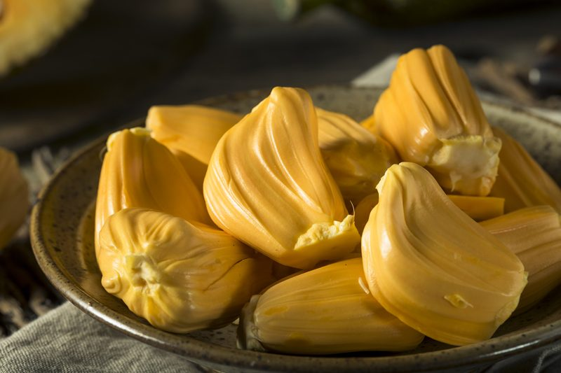
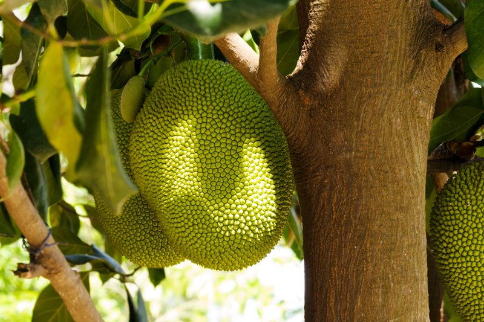
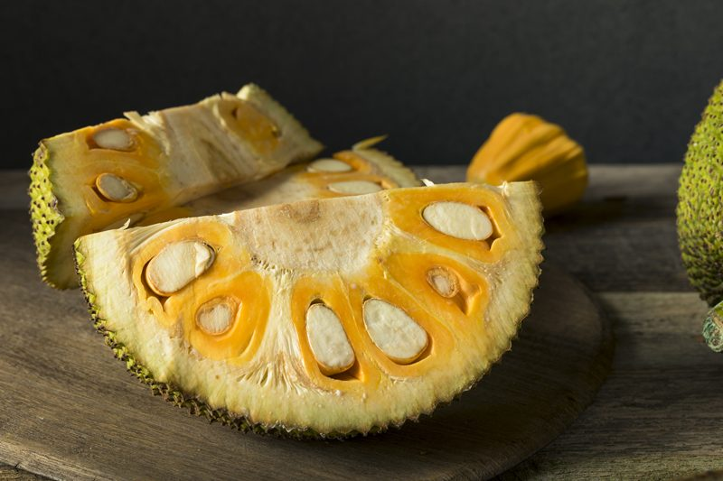

Jackfruit – Can Weigh up to 100 lbs!
Jackfruit is the largest tree-borne fruit in the world and when in season, one tree can bear as many as two-hundred-fifty of these amazing fruit. Just one jackfruit alone can reach eighty to one-hundred pounds in weight and up to thirty-six inches long and twenty inches in diameter. They have a tropical explosion of flavor… a combination of mango, banana, pineapple, and some even say it has a Juicy Fruit gum flavor.

The Interior Design
Surrounding the edible bulbs is the Latex Cushion
- This white latex substance can be very messy so be well prepared before cutting into the fruit. I will be talking more about that a bit further down in the post.
- If you have a latex allergy, wear gloves and coat them with oil, so the gloves don’t stick to the fruit.
The Edible Bulbs (arils)
- The interior consists of large edible bulbs of yellow, banana-flavored flesh that encloses a smooth, oval, light-brown seed.
- There are somewhere between fifty to five-hundred edible bulbs embedded in a single fruit.
The Seeds
- The seeds found within each bulb are 3/4 to 1-1/2 inches long and 1/2 to 3/4 inch thick.
- Jackfruit seeds are indeed very rich in digestible starch, protein, and minerals.
- The seeds can be eaten either by roasting or boiling.
- Rinse the jackfruit seeds, so they are free from any other part of the fruit.
- Place the seeds in a pot with about 1″ of water over the seeds.
- Bring the water to a boil over medium heat, then lower to a simmer and cover.
- Cook for 30 minutes or until soft (similar to a baked or steamed potato).

The Exterior Design
Surface
- The outer surface of the fruit is covered by blunt spikes which become soft as the fruit ripens.
- They are green or yellow when ripe. Watch for soft, moldy spots.
When Ripe
- When fully ripe, the unopened jackfruit emits a sweet smell, which it will begin to do a few days before it is ripe. It should also give a little with gentle pressure.
When Un-ripe
- Unripe green jackfruit is also a bit stringy, which makes for a great vegan, pulled-pork or taco “meat” substitute.
- It is very starchy and has less flavor.
Health Benefits
- Jackfruit is rich in dietary fiber, which makes it a good bulk laxative. The fiber content helps protect the colon mucous membrane by binding to and eliminating cancer-causing chemicals from the colon.
- It is high in magnesium, vitamin B6, and antioxidants.
- Jackfruit has strong anti-ulcerative properties that can cure ulcers and many other digestive system disorders.
- It contains vitamin C which helps to improve your immune system.
- Also contains vitamin B-6 (pyridoxine), niacin, riboflavin, and folic acid.
- Good source of potassium, which helps maintain stable blood pressure.
How to Cut the Jackfruit
Be prepared
- The skin and core are filled with amazingly sticky latex sap that will greatly adhere to your skin, cutting board, and your knife.
- Cover your working area with a newspaper.
- Oil your knife and hands with coconut oil to protect against that stubborn latex sap.
Start Cutting
- This will depend on how you buy the jackfruit, it can come whole, but many stores precut it into smaller discs.
- Whole fruit:
- Cut the fruit in half lengthwise and then lengthwise again into quarters; the cut skin and core will release the sap. Re-grease the utensil after each cut.
- Cut out the solid white core and discard any fibrous filaments around the fruit pods. Look for rotten or soft spots and cut them out. The flesh should be thick and yellow. It can be eaten and frozen raw; the seeds pop out with ease.
- Bend back the rind of the jackfruit, spreading apart the internal threads and arils.
- Firmly grasp and twist out the arils, or cut their bases away from the rind.
- Precut end piece:
- Cut it vertically down the middle.
- Take out the non-edible middle bit.
- Remove the bulbs with your hands, or cut them free with a knife.
- Once all the bulbs are out, remove the seeds using either a small knife or your fingers, by slicing it vertically.
- Precut Circular Slice:
- Cut it in half and take out the middle bit.
- Roll open to loosen the bulbs.
- Remove the bulbs by hand, then proceed with removing the seeds.

Selection and Storage
Look For
- Jackfruit is a summer season fruit coinciding with other tropical favorites like mango, durian, and mangosteen.
- Look for jackfruit that emits mild yet rich flavor (musky) and just yields to thumb pressure.
- Thorn-like projections become softer on the ripe fruit.
Store in Fridge
- Once the jackfruit arils have been removed, store them in an airtight container in the fridge for 2-3 days.
- It’s tastiest if you don’t wash the individual bulbs, or if you want to wash them, do so just before eating. Otherwise, they go soft and mushy.
Store in Freezer
- To preserve your fresh jackfruit, separate it into portion-sized, freezer-safe bags, and store it in the freezer for up to two months.
- When you’re ready to use it, allow it to thaw for about one hour on the counter, or in the fridge overnight.
Serving Tips:
- Jackfruit bulbs have a unique flavor and sweet taste. Enjoy them without any additions to experience their rich taste.
- Hand mix jackfruit slices, grated coconut, honey, and banana slices… enjoy as a referring snack or dessert.
- The fruit also used in jam, jelly, and chutney preparations.
- Fruit slices are a great addition to fruit salad.
- Toss it with some lime juice, olive oil, salt, and red pepper flakes for a healthy snack.
- It may be added to smoothies.
© AmieSue.com